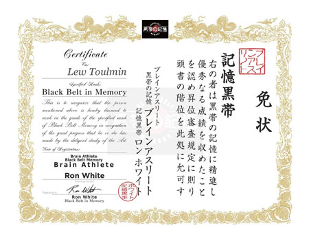

|
of the Most Traveled Men on Earth Lew Toulmin |
 |
Memory Systems
|
of the Most Traveled Men on Earth Lew Toulmin |
|


|
Memory systems may date back as far as the poet Simonides of Ceos (now Kea, in SE Greece), who lived from 556 to 468 BCE. According to legend, he was at a banquet, was called outside, and just missed being crushed when the banquet hall collapsed, killing everyone inside. He was asked to remember who the unrecognizable victims were, and realized that by visualizing their locations on couches and seats in the hall, he could list all their names. This led him to develop the system of "loci," in which information to be memorized is placed in familiar locations inside known rooms.
Other names for this system are the "memory palace" or "brain athletics." Perhaps a better term would be "maximum brain activation for rapid learning and retention." Through the use of this method, modern "mental athletes" - who are ordinary people who have simply trained their minds -- have undertaken the following feats (and many more):
I have been interested in memory systems for years, ever since reading Rudyard Kipling's classic novel Kim when I was fifteen years old. Kim was trained as a youth to improve his memory by playing repetitive memory games by his tutor Lurgan Sahib, and then Kim used his new skills as a spy for the British secret service and the geographical Survey of India. But it was not until early 2017 that I got around to actually improving my own memory. While I am a fast writer and analyst, I have a poor memory for names (but not faces), and for dates and sequential numbers. I looked around the field of available memory programs, books and systems and I settled on Ron White's Black Belt in Memory program. Ron was the ex-military man who was able to recall and write down all the names of the 2500 US military personnel killed in Afghanistan. I studied Ron White's course on the Internet for about three months part time, putting in about 80 hours of work. White's system covers various memory elements, including:
The Chinese have discovered Memory Systems, and are starting to win world memory championships and introduce the systems into their schools. Hence the flag button for this page is China, not the US. I hope we can turn this around. Happy memorizing!  Click to enlarge 2021 PAO system for remembering 52 cards(xlsx file) Images of Toulmin numbers 00-99 v3(PDF) 600 Graphic Link Words for Remembering Names and Faces(PDF) Memory poem for kings and queens of england - v4(PDF) Pictures for memorization of deck of cards by Lew Toulmin(PDF) Toulmin's Memory aid to memorizing the streets of the French Quarter, New Orleans v FINAL(PDF) |